11. MIDI Tools
MIDI Tools open further possibilities when it comes to working with MIDI content. These scale-aware utilities can be accessed via the Transform and Generate panels of the Clip View. While Transformations are aimed at performing targeted operations on existing MIDI notes, Generators offer more exploratory tools, resulting in the creation of new material.
Transformation Tools modify various note properties of existing notes, including MPE data. They require a selection of notes as input for the transformation.
MPE MIDI Tools are a subset of Transformations and can be used to add note expression or transform existing expression data. You can view the results of applying these MIDI Tools in the MIDI Note Editor’s MPE view mode.
Generative Tools do not use any input and instead add new notes to the clip loop or time selection. Note that if there are already notes in the clip or time selection, the generated notes will replace the existing notes.
Transformations and Generators are further divided into native MIDI Tools and Max for Live MIDI Tools. Native MIDI Tools are built into Live and their properties cannot be edited. In contrast, the bundled Max for Live MIDI Tools can be edited, and you can also build additional MIDI Tools or install MIDI Tools from third-party creators to further expand your toolset for note transformation and generation. The Max for Live MIDI Tools you built or saved can be quickly located in the browser with a dedicated MIDI Tools filter group or the MIDI Tool tag in the Content filter group.
11.1 Using MIDI Tools
In order to transform notes or generate notes using a MIDI Tool, open the Transform or Generate panel, select a tool from the Transformation/Generator Selector chooser and tweak the settings in the selected MIDI Tool’s interface. By default, the Auto Apply button is active for all MIDI Tools. This means that MIDI notes will be transformed or generated immediately when adjusting a MIDI Tool’s settings.

Any subsequent changes to a MIDI Tool’s parameters will be visible in the MIDI Note Editor straight away. If you do not wish for the Transformations and Generators to have an immediate effect, toggle off the Auto Apply button. Note that toggling the button off will restore notes to their original state.
With the Auto Apply button toggled off, you can fine-tune a MIDI Tool’s parameters and, once you’re happy with the settings, press the Apply button for the adjustments to take effect.

You can also apply the currently selected MIDI Tool without leaving the MIDI Note Editor by pressing CtrlEnter (Win) / CmdEnter (Mac).
Transformations are applied to the time selection, note selection, or clip loop (when there is no time or note selection). When using Transformations, the existing notes get replaced with the transformed notes.
Generators are applied to the time selection or clip loop (when there is no time selection). If there are already notes present in the MIDI Note Editor when a Generator is applied, the generated notes will be added alongside the existing content (if the existing notes and the generated notes don’t overlap) or will replace the existing notes (if the existing and generated notes overlap).
Since MIDI Tools are scale-aware, if a scale is enabled for a clip, any MIDI Tools’ parameters related to pitch will use scale degrees instead of semitones.
The transformation or generation of notes can be undone and redone with the Undo and Redo commands in the Edit menu. Note that these commands only affect changes made to MIDI notes and not changes made to a MIDI Tool’s parameters. You can restore the parameters to their default state with the Reset button. The button becomes grayed out when the MIDI Tool is reset to default.

The Reset button only applies to the parameters in the selected MIDI Tool and has no effect on the MIDI notes.
11.1.1 Using Max for Live MIDI Tools
In addition to Live’s native MIDI Tools, you can also access Max for Live MIDI Tools to transform and generate notes in clips. Max for Live MIDI Tools are AMXD files that can be used in the Transform or Generative Tools tab/panel in the Clip View. You can edit or create Max for Live MIDI Tools in a Max patcher like any other Max device.
There are two built-in Max for Live MIDI Tools included with Live Standard and Suite: Velocity Shaper and Euclidean. If you use the Suite edition or the Standard edition with the Max for Live add-on, you can also edit and build your own Max for Live MIDI Tools or use Max for Live MIDI Tools from third-party creators.
In order for third-party Max for Live MIDI Tools to show up in the Transform and Generative tabs/panels in the Clip View, save them in these folders on your computer:
- Transformations: ~/Music/Ableton/User Library/MIDI Tools/Max Transformations
- Generators: ~/Music/Ableton/User Library/MIDI Tools/Max Generators
Alternatively, you can save third-party MIDI Tools’ AMXD files in any folder within Places in Live’s browser.
11.2 Transformation Tools
Below you will find a list of all MIDI Transformations included in Live.
11.2.1 Arpeggiate
The Arpeggiate Transformation splits up the note selection into arpeggiated notes based on the chosen pattern settings. It uses the core functionalities found in the Arpeggiator MIDI effect.
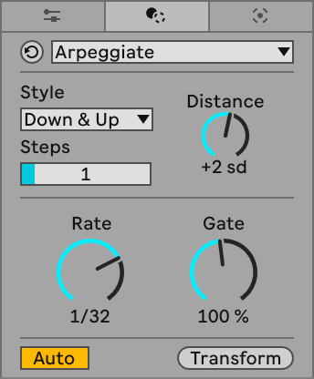
The Style drop-down menu allows you to select an arpeggiated sequence which will be applied to the selected notes. The Arpeggiate Transformation offers the same 18 style patterns known from Arpeggiator.
The Distance control determines the transposition of steps in the pattern using scale degrees or semitones, depending on whether a scale is set for the clip.
The Steps slider allows you to select the number of transposed steps in the pattern.
The Rate and Gate controls determine how notes are distributed on a timeline: the former sets the rate of the pattern (which also affects note length), while the latter affects note duration. When Gate is set to values below 100%, notes will be shortened, whereas at values above 100% notes will be lengthened.

11.2.2 Chop
The Chop Transformation divides selected MIDI notes into a maximum of 64 parts. It can also be used to design note division patterns; for example, you can create a pattern where some notes are extended relatively to others, or where a random variation is added to note start or end times.
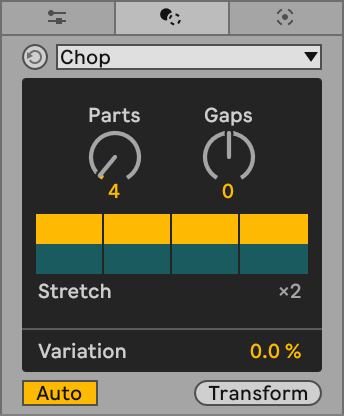
You can create a note chopping pattern by setting the number of parts for the chopped note(s) with the Parts control, from 2 to 64 parts. The Gaps control adds spaces to the pattern, with the exact minimum and maximum number of gaps depending on the number of parts the pattern contains. When set to positive values, the control represents the number of notes after which a gap will be added. When set to negative values, the control represents the number of gaps that will be added after each note. For example, when set to 2, a gap replaces a note in the sequence after two successive notes. When set to -2, two gaps are added after each note. Note that a pattern can consist of a maximum of 16 parts. If the Parts control is set to a higher value, the pattern will repeat.
The Pattern toggles visualize the pattern designed with the Parts and Gaps controls and let you manually add and remove gaps within the pattern, which can be helpful in creating rhythmic variations. When the number of gaps is changed with the Pattern toggles, the Gaps control shows a dash. If the control is adjusted, the manually added gaps in the pattern are replaced with those set through the Gaps control.
The Emphasis toggles let you select which notes or gaps are emphasized in the pattern. Emphasized pattern elements are affected by the Stretch Chunk(s) value, which stretches the relative length of notes or gaps from 2 to 8 times longer. When notes or gaps are emphasized, their corresponding Pattern toggles are grayed out.
You can use the Variation slider to add random variation to the note start and end times.

11.2.3 Connect
The Connect Transformation generates new notes that fill the gaps between existing notes. The placement of the interpolated notes is randomized, but some particulars of the pattern can be determined using Connect’s parameters.
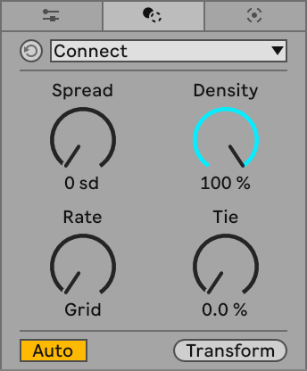
The Spread control sets the maximum random pitch shift of the connecting notes based on the original note pitches, in scale degrees or semitones.
Density allows you to specify the percentage of the time interval between original notes to be filled with interpolated notes. At 100%, all the gaps between existing notes will be filled.
Use the Rate control to set the length of the interpolated notes and the Tie control to determine the probability that the length of a generated note will be extended to the next original note.

11.2.4 Glissando
The Glissando Transformation is an MPE MIDI Tool that connects the pitch of one note to the pitch of a successive note along a pitch bend curve, tying the notes together. At least two notes must be selected to create a glissando.
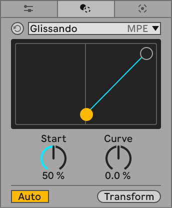
The Start control sets the starting point of the pitch bend curve, expressed as a percentage of the note length. The Curve control changes the shape of the pitch bend curve. You can click and drag the yellow breakpoint in Glissando’s display left or right to adjust pitch bend start, or click and drag the line up or down to adjust the pitch bend curve shape.

Note that you can only view the pitch bend curve in the MPE Editor. When the MIDI Note Editor is open, the Glissando Transformation is applied, but the pitch bend curve is not visible.
When working with folded notes, you can display the pitch bend curve below the MIDI Note Editor by activating the Pitch Bend expression lane.
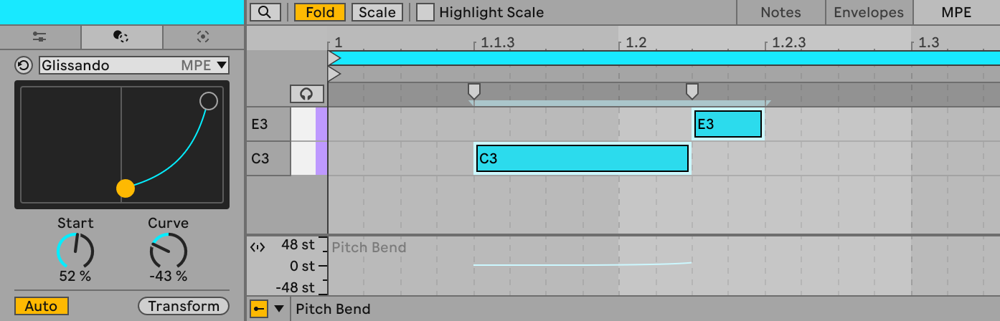
11.2.5 LFO
LFO is an MPE Transformation that uses a low-frequency oscillator to set the value of one of three MPE parameters: pitch bend, slide, or pressure. The oscillator’s shape, rate, and global amplitude can all be customized using the Transformation’s parameters.

The Target chooser lets you set Pitch Bend, Slide, or Pressure as a modulation target for the LFO. The LFO curve display shows the shape of the LFO used as a modulation source.
The Envelope Attack and Decay sliders set the attack and decay of the oscillator’s amplitude envelope, relative to the total length of the oscillation. Note that the envelope’s attack and decay values influence each other. This means that if, for example, Attack is set to 100%, Decay is automatically reset to 0%.
The Shape control adjusts the shape of the oscillator based on the shape selected in the Shape Type chooser. You can choose from the following four types: Sine, Square, Triangle, or Random. When Random is selected, the Reseed button can be used to generate new random shapes for the LFO.
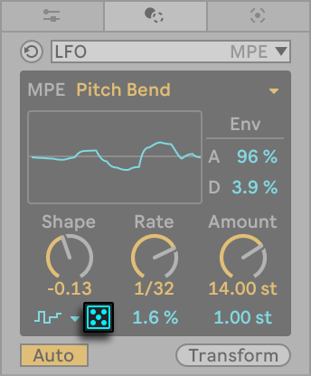
The Rate control sets the period of the oscillator in musical time, from 1 to 1/128. For example, setting the rate to 1 equates to 4 beats. The Time Shift slider below Rate shifts the LFO in time. Positive values delay the start of the oscillation and negative values adjust its phase.
The Amount control sets the oscillator’s amplitude. When Pitch Bend is selected as the modulation target, Amount can be set to any value within double the clip’s current pitch bend range. For example, if the range is set to ±60 st, Amount can be set from -120 st to 120 st. When Slide or Pressure are selected, Amount can be set from -127 to 127. You can set the base value for the amplitude using the Amplitude Base slider below the Amount control. When Pitch Bend is selected as a modulation target, Amplitude Base can be set to any value within the clip’s current pitch bend range. For example, if the range is set to ±60 st, Amplitude Base can be set from -60 st to 60 st. When Slide or Pressure are selected, Amplitude Base can be set from -127 to 127.
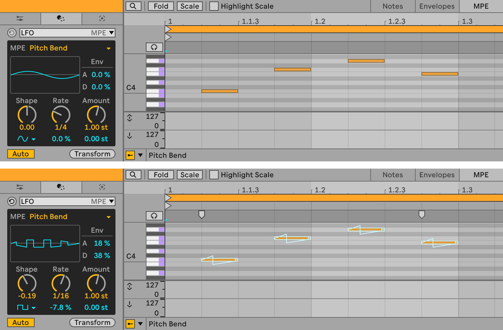
The MPE curve for the Pitch Bend modulation target is displayed in the MIDI Note Editor. You can also choose to display it below the MIDI Note Editor by activating the Pitch Bend expression lane, which can be helpful when working with folded notes. Modulation curves for Slide and Pressure are displayed in their respective expression lanes.
Note that the modulation applied by the LFO Transformation is only displayed in the MPE Editor. When the MIDI Note Editor is open, the Transformation is applied, but the expression curves are not visible.
11.2.6 Ornament
The Ornament Transformation contains Flam and Grace Notes options which allow for ornamental notes to be added to the beginning of selected notes. Reapplying the Transformation to the same selection results in additional flam or grace notes being inserted.

Select which type of ornamental notes to add by switching on either the Flam or Grace Notes toggle.
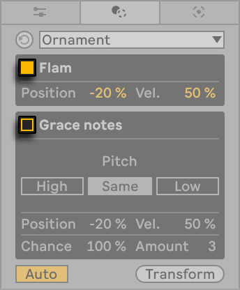
When using Flam, a single note is added to the beginning of each selected note.
The Flam Position parameter controls the placement of the flam note: at positive values, the flam note will replace the beginning of the original note, while at negative values, the flam note is prepended to the start of the selected note. The parameter’s value represents the percentage of the current grid setting, so the length of the flam note will be determined by the grid size rather than the length of the original note. This means that at 100% / -100% the flam note’s length will be equal to one grid division, placed respectively at the start of the original note or before it, and will become proportionally shorter as Flam Position’s value approaches 0%.
The Flam Velocity parameter sets the velocity of the flam notes relative to the velocity of the original notes.
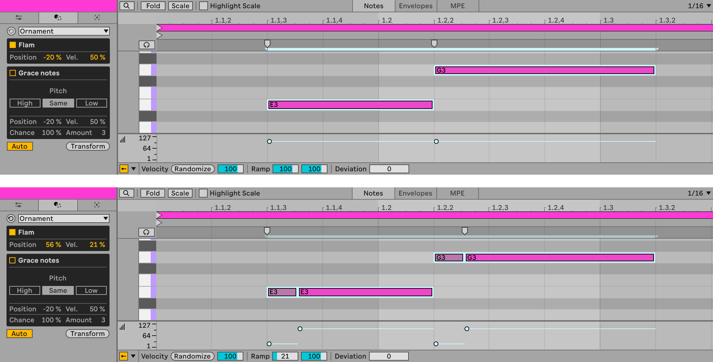
When using Grace Notes, multiple notes of equal length are added to the beginning of each original note.
The Grace Notes Pitch buttons allow you to determine the pitch of the added grace notes relative to the original note. When High is selected, every other grace note is placed one semitone (or scale degree, if a scale is active) higher than the original notes, while when Low is selected, the pitch of every other grace note is one semitone or scale degree lower than the existing notes. If Same is selected, the grace notes are added at the same pitch as the original notes.
The Grace Notes Position parameter controls whether the added grace notes replace the beginning of the selected notes (when the parameter is set to positive values) or are prepended to the original notes (at negative values). The value represents the percentage of the current grid size: at 100% / -100% the inserted graces notes will fill one grid division, placed respectively at the start of the original note or before it.
The Grace Notes Velocity parameter determines the velocity of grace notes relative to the velocity of the original notes.
The Grace Notes Chance control determines the probability that each grace note will be played relative to the original note’s Chance values.
The Grace Notes Amount parameter allows you to specify the number of grace notes to be applied to each selected note. The individual grace notes are always equivalent in size.
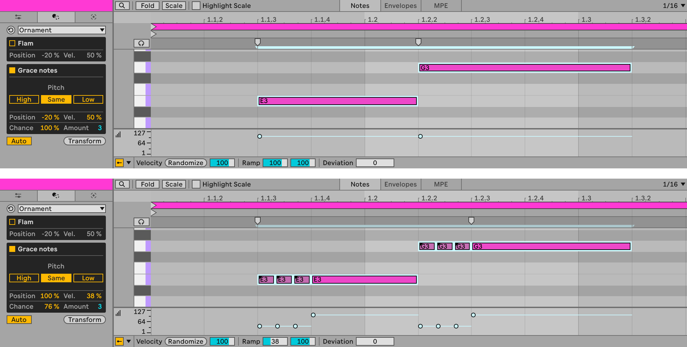
11.2.7 Quantize
The Quantize MIDI Tool adjusts the timing of selected notes by moving or stretching them according to the specified quantization settings. Note that an equivalent Quantize tool exists for audio clips.

You can transform notes according to the current grid size or set a specific meter value for quantization (including triplets). It’s possible to quantize note start or end time, or both note start and end time simultaneously. Quantizing the note end will stretch the note so that it ends at the chosen meter subdivision. You can also quantize notes without giving them that “quantized” sound using the Amount control, which will move notes only by a percentage of the set quantization value.
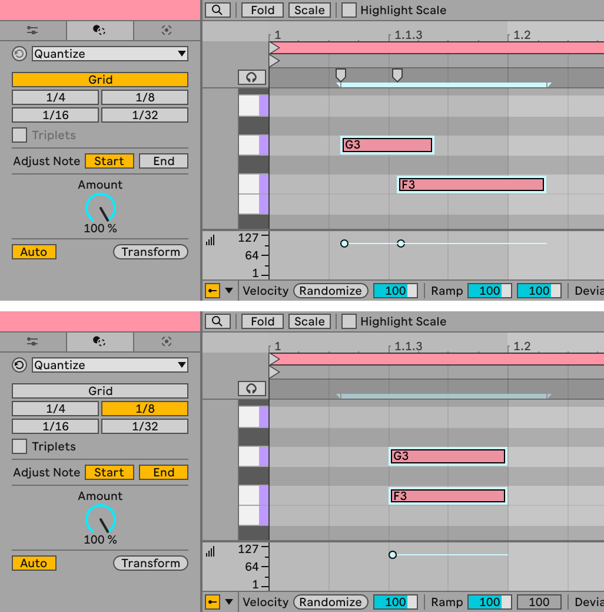
Aside from navigating to the Transformation using Clip View’s tabs/panels, you can also open the Quantize MIDI Tool to change its parameters by using the Quantize Settings… command in the Edit menu, or use the CtrlShiftU (Win) / CmdShiftU (Mac) shortcut to apply quantization to the selected notes without opening the Transform tab/panel.
11.2.8 Recombine
The Recombine MIDI Tool rearranges the position, pitch, duration, or velocity for a selection of notes, so that a parameter value set for one note in the selection is applied to a different note.

You can use the Dimension chooser to select one of four note parameters for Recombine to permute: Position, Pitch, Duration, or Velocity.
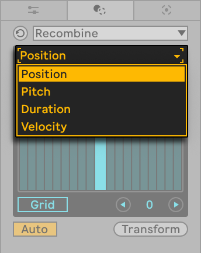
There are three ways of rearranging note parameters using Recombine: 1. Shuffle, where note parameters are permuted randomly. 2. Mirror, where note parameters are permuted to be in reverse order to the note selection. 3. Rotate, where note parameters are permuted in a circular way.
The Shuffle and Mirror permutation types can be activated using their respective toggles, whereas for Rotate to take effect, you need to set the number of Rotation Steps to a value other than 0.
Rotation Steps can be set by clicking and dragging your mouse across the columns in Recombine’s display or by using the Rotate Step Down/Up buttons below the display. The number of available steps is always one step fewer than the number of selected notes. Positive numbers rotate parameter values clockwise, and negative numbers rotate parameter values counter-clockwise.
When Position is selected in the Dimension chooser, you can switch on the Rotate on Grid toggle. When on, Recombine uses the number of grid cells in the selection as a basis for the number of available Rotation Steps rather than the number of notes. The exact number of available Rotation Steps depends on the current grid settings.
Each permutation type can be used individually or in conjunction with others. Permutation types are applied in the following order: Shuffle, then Mirror, then Rotate. Note that when Shuffle is active, a new parameter permutation is created each time the Apply button is pressed.

11.2.9 Span
The Span MIDI Tool transforms the durations of selected notes using three articulation types: legato, tenuto and staccato.
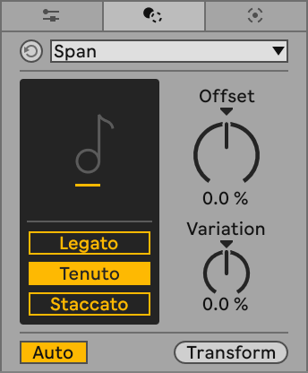
It is also possible to introduce some variety to how notes are transformed with additional parameters:
- Offset adjusts note end times up to a grid step. At positive values, note length is extended; at negative values, note length is shortened.
- Variation adds random variation to note lengths. At positive values, note length is shortened; at negative values, note length is extended. If set to values other than 0%, new note length variation will be produced whenever the Transformation is reapplied.
Legato extends the length of selected notes to the start time of the next note in the sequence. The last of the selected notes will be extended to the end of the time selection or, if there is no time selection, to the end of the loop.
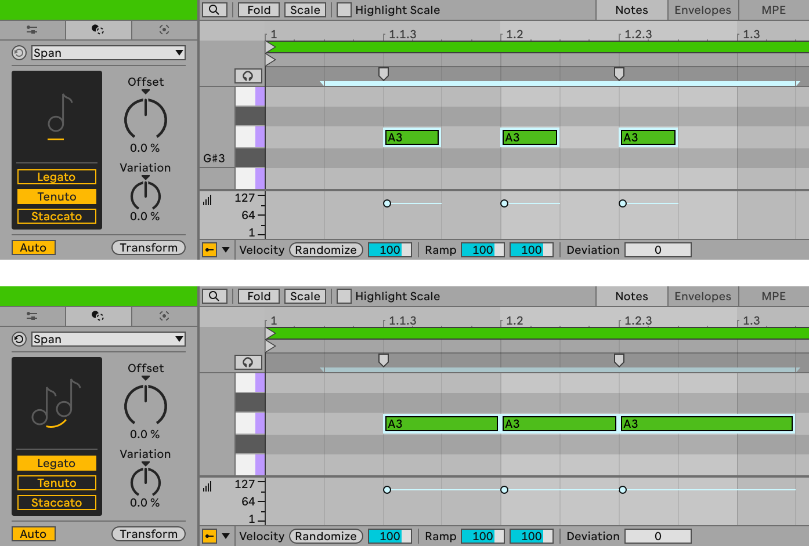
Tenuto preserves the original note length unless the Offset and Variation parameters are adjusted.
When using the Staccato articulation type, note length is determined by the distance between start times of the selected notes. The smallest distance between start times is halved and this duration is used as the new note length for the transformed notes. Note length can be further modified using the Offset and Variation parameters.
11.2.10 Strum
The Strum MIDI Tool adjusts the start times of notes in a chord following a shape set by the Strum Low, Strum High and Tension parameters.

The Strum Low parameter determines the offset of the successive notes, starting with the lowest note. At positive values, the note start times are moved forward, whereas at negative values the start times are moved back. The start time of the lowest note is offset up to one grid step at 100% / -100%. The other notes are proportionally, matching the shape in the Strum Position display. If the Tension parameter is set to 0.0%, notes are distributed at an equal distance between each other.
The Strum High parameter determines the offset of the original chord starting with the highest note. When set to positive values, the note start times are moved forward, whereas at negative values the start times are moved back. The highest note is offset up to a grid step at 100% / -100%. The other notes are distributed proportionally to match the shape in the display. If the Tension parameter is set to 0.0%, notes are distributed at an equal distance between each other.
In order for the Transformation to have effect, the Strum Low and/or Strum High parameters must be set to a value other than 0.0%. You can make changes to both parameters by adjusting their respective breakpoints in the Strum Position display, or by entering a value for each using your computer keyboard.
The Tension parameter changes the offset of note start times so that they are no longer placed at an equal distance between each other, but instead alongside a curve, with distances between notes being larger or smaller, depending on the settings. At positive Tension values, the distance between the notes will be greater at the start of the note sequence and decrease exponentially. At negative values, the distance between notes at the start of the sequence will be shorter and increase exponentially.
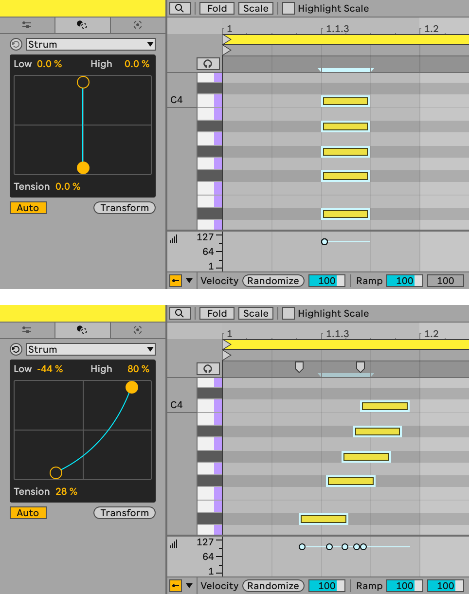
11.2.11 Time Warp
Time Warp is a time-stretching MIDI Tool that transforms selected notes according to a speed curve. This allows creating tempo variations such as accelerando or ritardando.

You can create the speed curve in the Breakpoints display. The time range of the curve is mapped to the time selection. It is possible to enable between one and three breakpoints in the speed curve using their respective toggles. You can either drag a breakpoint in the display or select it and use the Breakpoint Time and Breakpoint Speed sliders to set the breakpoint’s timeline position and speed, respectively. The sliders’ values always reflect the values of the currently selected breakpoint.
The toggles below the Breakpoints display allow you to make further adjustments to the time-warping applied. When Quantize is on, the warped notes will be quantized according to the grid settings. When the Preserve Time Range switch is enabled, the results of the Transformation will fit within the same range as the original note selection. When the Include Note End switch is toggled on, the end positions of the original notes are taken into account when applying the speed curve, which will have an effect on the duration of the original notes.
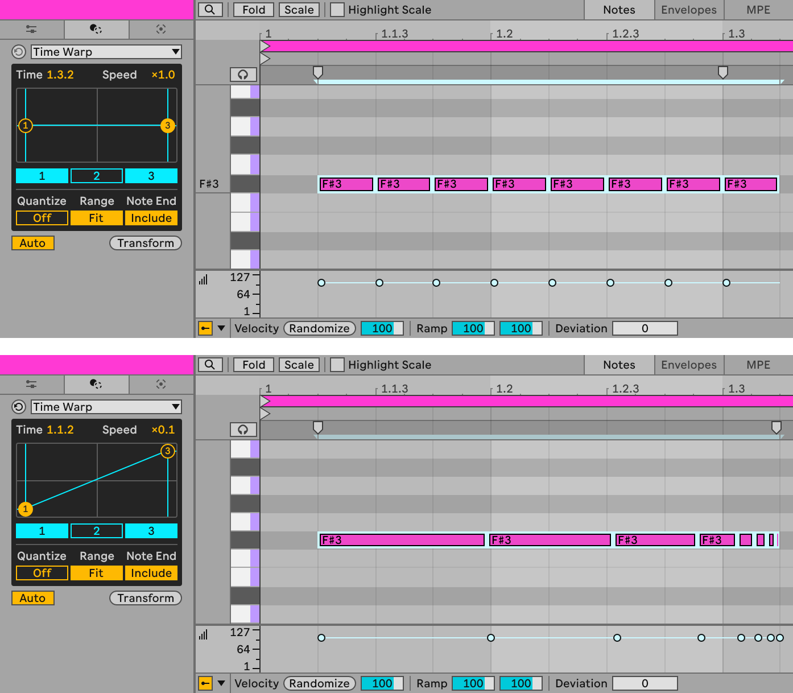
11.2.12 Velocity Shaper
Velocity Shaper is a Max for Live Transformation.
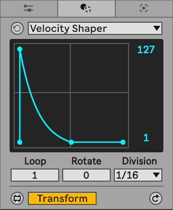
Velocity Shaper allows you to shape the velocities of selected notes using an adjustable envelope.
The envelope shape in the display will influence how the velocities of the selected notes are transformed. Click in the display to add more breakpoints to the envelope and drag them to adjust the envelope shape.
You can use the Minimum and Maximum Velocity parameters on the right of the display to define the velocity range for the transformed notes.
The Loop parameter below the display sets the number of times the envelope shape will be applied to the note selection.
The Rotate control determines the number of steps the envelope shape is offset, relative to the start of the note selection. The size of the step is determined by the Division parameter. For example, if Rotate is set to 1 and Division is set to “Grid”, the envelope shape will be shifted to the right by one grid step.
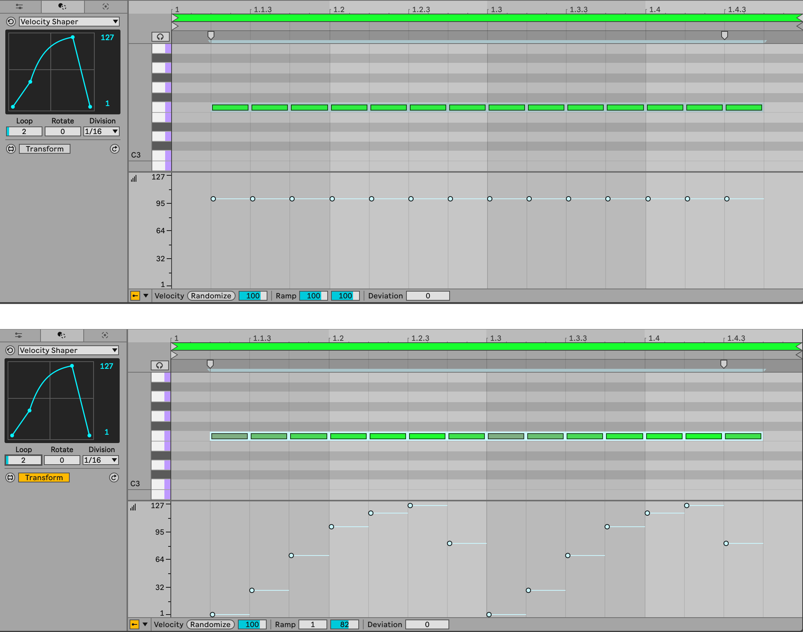
11.3 Generative Tools
Below you will find a list of all MIDI Generators in Live.
11.3.1 Rhythm
The Rhythm MIDI Tool generates a note pattern according to the set parameters, repeated to fill a given time selection.

The notes can be generated for a particular pitch or for an individual drum pad when working with Drum Racks. You can choose a pitch or a drum pad using the Pitch control, or by holding the Alt (Win) / Option (Mac) key and clicking on the piano ruler.
Use the Steps control to set the number of steps in the pattern, up to 16 steps.
The Pattern knob is used to determine the placement of the generated notes (the shape of the pattern). The number of available patterns depends on the values set for the Steps and Density parameters.
The Density knob controls the number of notes in a pattern. Note that the maximum value is determined by the number set with the Steps control.
The Step Duration slider can be used to adjust the number of times a pattern is repeated in the time selection. For example, for a time selection of one bar, if Step Duration is set to 1/8 and Steps is set to 8, the pattern will be repeated only once. When Step Duration is changed to 1/16 in the same scenario, the pattern is repeated twice. Note that Step Duration will affect the maximum number of steps to be set using the Steps control.
The Split control allows you to set a probability for a step in a pattern to be divided in half.
Shift moves the generated notes by a specified number of steps to the right when set to positive values and to the left when set to negative values.
You can set the note velocity for the generated notes and specify a different velocity for accented notes using the Velocity and Accent sliders. The number of accented notes that occur in the pattern is determined by the Accent Frequency parameter, which sets the number of notes between accented notes. This value ranges from 0 to the number of notes specified by the Density parameter. Note that an accented note is counted as a note occurrence — if the Accent Frequency is set to 1, every note will be accented. You can use the Accent Offset arrows to shift the placement of accented notes in the pattern.
To add to your rhythmic pattern, deselect the previously generated notes and adjust Rhythm’s parameters again for a different pitch or drum pad.

11.3.2 Seed
The Seed MIDI Tool randomly generates notes within specified pitch, length and velocity ranges. Additional parameters allow specifying the number of simultaneously occurring notes, as well as the overall number of generated notes.

To select the range of pitches within which new notes will be generated, drag the Minimum and Maximum Pitch or Key Track sliders or the triangular handles in the Pitch Range slider. If one of the handles is dragged to overlap the other, the handles get merged; in this case, notes will be generated in one pitch only. To revert to two handles, click anywhere in the Pitch Range slider or set different values in the Minimum and Maximum Pitch or Key Track sliders. You can also hold the Alt (Win) / Option (Mac) key and click in the piano ruler to select a single pitch for notes to be generated in or click and drag to select a range of pitches. Note that if the clip has an active scale, the slider will be displayed in purple; otherwise, it will be displayed in the same color as the other two sliders.
The Duration and Velocity Range sliders work in the same way as the Pitch Range slider to set note length and velocity ranges for generated notes. The minimum note length you can set for the duration range is 1/128 note and the maximum is one note. Velocity can range from 1 to 127.
You can also control the number of notes added using the Voices and Density controls, which allow setting the maximum number of simultaneous notes to be generated, as well as the number of all generated notes, represented as a percentage of the pitch range to be populated.

11.3.3 Shape
Shape is a MIDI Tool that generates a sequence of notes within a range of pitches. The notes are distributed following a shape defined in the MIDI Tool’s display.
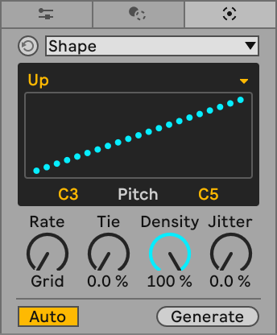
In order to determine the shape that will be used for note generation you can use the Shape Presets drop-down menu or draw your own shape in the display. Use the Minimum and Maximum Pitch sliders to set a range in which the notes will be added. You can also hold the Alt (Win) / Option (Mac) key and click and drag to select a range. Note that when a clip scale is active, the shape is displayed in purple.
Use the Rate control to set the minimum length of the generated notes. Note duration can also be affected by the Tie parameter, which sets the probability that a generated note will be extended to the next note.
The Density knob allows you to set the number of notes to be added, represented as a percentage of the shape to be populated.
If you want to randomize the pitches of the generated notes, use the Jitter parameter. At 0%, the notes will follow the shape set out in the Shape Levels display exactly and will move progressively further away from the shape as you increase the Jitter value. Note that the randomized pitches will always stay within the range specified by the Minimum and Maximum Pitch sliders.

11.3.4 Stacks
Stacks is a MIDI Tool you can use to add individual chords or create chord progressions within a selected scale. The generated chords fill time selection or the length of the loop if there is no time selection.

You can select a chord pattern by clicking and dragging the Chord Selector Pad or using Ctrl (Win) / Cmd (Mac) and the up and down arrow keys. The chord pattern diagrams are simple illustrations of the relationship between the intervals in a chord; they are based on the Tonnetz system. When hovering over a Chord Selector Pad, additional information about the chord is displayed in the Status Bar.
You can use custom chords in Stacks by creating your own chord banks. These are text files that define specific chord rules in the JSON format and are saved with the .stacks extension. Read more about how to create chord banks in this Knowledge Base article.
To load a custom chord bank into the Stacks Generator, place a .stacks file in a folder that has been added to the browser’s Places section. Then double-click the file name in the browser to replace the default bank in Stacks.
You can quickly locate all chord files by using the browser’s dedicated Stacks tag in the MIDI Tool filter group, or the MIDI Tool tag in the Content filter group.
To create a chord progression, use the Add Chord plus button to the right of the Chord Selector Pad/s and select a pattern for the additional chords. You can reduce the number of chords using the Delete Chord minus button.
Use the Chord Root knob to set the root note for the chord. You can also hold the Alt (Win) / Option (Mac) key and click in the piano ruler to make the selection, or use up and down arrow keys to cycle through root notes. If there is a scale set for the clip, the Chord Root will be automatically adjusted to the root note of that scale. You can still choose a different root note for the chord, but whenever a clip scale is active, the root note options for the chord will be limited to the notes within the clip scale.
The Chord Inversion knob allows you to rearrange a chord using one of the available inversions. Positive values cycle through the possible inversions for a selected chord and negative values cycle through the same inversions an octave lower. Chord Duration and Offset can be used to set the length and position of a chord. Both can be adjusted in eighths of the original chord length.
Note that all of the parameters visible in the Stacks Generator’s display at a given moment are specific for the currently selected chord. This means that whenever another chord is selected, the display will be updated to show that chord’s parameters.
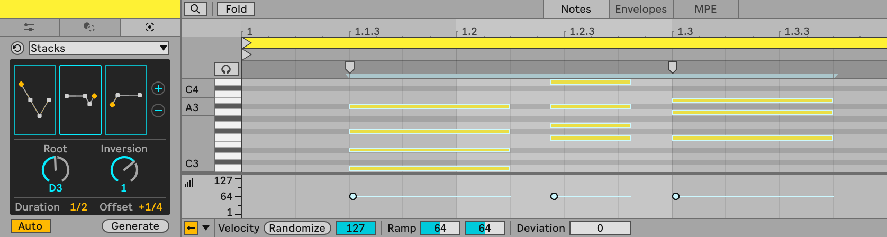
11.3.5 Euclidean
Euclidean is a Max for Live Generator.

Euclidean generates notes based on Euclidean rhythms for up to four voices at a time. New notes will be generated within the time selection or, if there is no time selection, within the loop.
The Pattern tab contains a visual representation of how generated notes will be added to the clip. To the right of the visualization, there are individual toggles that can be used for activating and deactivating voices, as well as individual Rotation sliders for setting the offset of generated notes for each voice, relative to the beginning of the time selection. In the middle of the pattern visualization, there is a randomization button, which sets the Rotation sliders’ value for each voice at random.
You can click on Voices to select the Voices tab. Like in the Pattern tab, there are toggles to activate or deactivate individual voices, as well as the option to set each voice to a specific pitch (when using instrument devices) or drum pad (when using Drum Racks). Use the up and down arrows to the left of the voice activation toggles to simultaneously change all the pitches or drum pads used to generate notes. You can also set individual velocity values for the notes generated for each voice using the Velocity sliders on the right.
Below the Pattern and Voices tabs, there are additional parameters that can be used to further define the shape of the generated rhythmic pattern:
Steps — Determines the length of the generated pattern. If the pattern length is shorter than the length of the time selection, the pattern will be repeated and potentially wrapped around the time selection. Density — Determines the number of times the pattern is repeated within a time selection. If the pattern doesn’t fit within the time selection, notes will be wrapped around the time selection. Division — Sets the length of a step in the pattern.
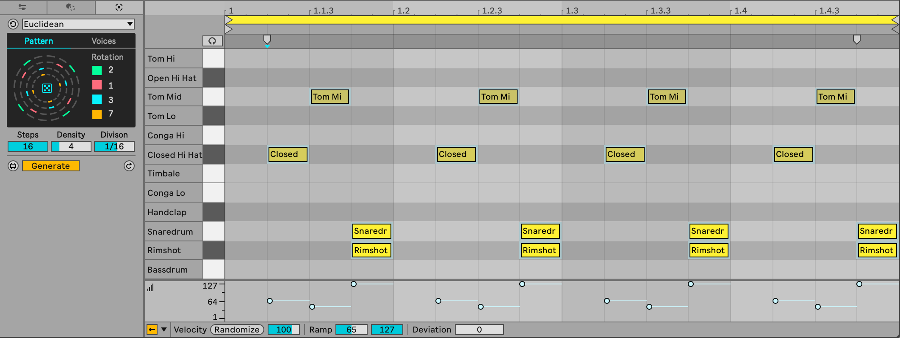